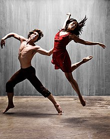

En la década de 1920, los estudios de la danza (práctica de la danza, la teoría crítica, análisis musical y de la historia) comenzaron a ser considerados como disciplinas académicas. Hoy en día estos estudios son una parte integral de las artes en muchas universidades y programas de humanidades.
A finales del siglo xx, se reconoció el conocimiento práctico como igual al académico; esto condujo a la aparición de prácticas de investigación. Una amplia gama de cursos de baile están disponibles, incluyendo:
Práctica profesional: habilidades de interpretación y técnica, docencia.
Práctica de investigación: la coreografía y el desempeño.
Etnocoreología, que abarca los aspectos relacionados con la danza de: antropología, estudios culturales, estudios de género, estudios de área, la teoría post-colonial, etnografía, etc.
La danzaterapia o terapia del baile.
La danza y la tecnología: los nuevos medios y tecnologías de alto rendimiento.
Análisis del movimiento Labán y estudios somáticos.

Títulos académicos están disponibles, desde licenciaturas hasta doctorados y otras becas postdoctorales.